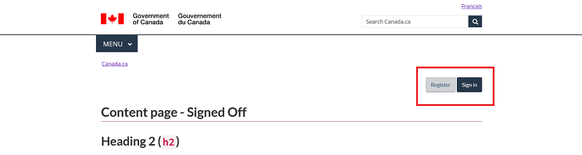

---
{
"altLangPage": "authentication-fr.html",
"breadcrumb": {
"title": "Canada.ca", "link": "https://www.canada.ca/en.html"
},
"dateModified": "2022-06-30",
"description": "Documentation on how to use the various authentication patterns.",
"language": "en",
"title": "Authentication patterns"
}
---
This component support the following 4 design pattern variant:
- Contextual Sign in button: A link pointing to a dedicated sign in web page
- Signed-off: A pattern that show how the user can sign-on directly from the current page. Note: The prompt sign in dialog and the interaction resulting of the signed-on are currently out-of-scope.
- Signed-on: A pattern that shows that the user is logged in, a way to access user's account and how to disconnect.
- Active user session: A pattern that show the active user session information (connected), with a personalized user name.
Contextual Sign in button
With proper parameters, the button will appear on page load and will be located on the top right-hand side of the page, below the horizontal line as indicated in the contextual Sign in button guidance.
HTML Structure - Version 1.0
Code sample of the include showing the HTML of the component
Configuration for GCWeb Jekyll
The auth variable MUST be set along with the type parameter with the value "contextual" in order to initiate the contextual sign-in button pattern.
Parameters to be set:
link this parameter MUST be set in order to assign a URL to the link button for pointing to the application where users will be redirected.label with a maximum lenght of 12 characters allowed including spaces, this parameter MUST be set to generate the text appearing on the button for any viewports from extra-extra-small to extra-large (xxs, xxs, sm, md, lg and xl).labelExtended with a maximum lenght of 25 characters allowed including spaces, this parameter is optional but must be set along with the label paramter and if set, it will generate the text appearing on the button for small viewport and up (sm, md, lg and xl).
Signed-off / Signed-on
On page load, the buttons must appear on the top right-hand side of the page, below the horizontal line.
HTML Structure - Version 2.0
Code sample of the include showing the HTML of the component
Configuration for GCWeb Jekyll
The auth variable MUST be set along with the type parameter set with either the value "signedoff" or "signedon" in order to initiate the Signed-off or Signed-on pattern.
Parameters to be set:
- signedoff set as value to the
type parameter will generate the "Register" and "Sign in" buttons to appear on the top right-hand side of the page, below the horizontal line.
- signedon set as value to the
type parameter will generate the "My account" and "Sign out" buttons to appear on the top right-hand side of the page, below the horizontal line along with the wording "Signed in as [full name]" right underneath.
Previous design patterns
Previous pattern (Authentication Signed off)
The "Register" and "Sign in" buttons were located on the right-hand side of the page, at the end of the <header> section so appearing between the breadcrumb and the <h1> element.

Code
<section id="wb-so">
<h2 class="wb-inv">Sign-on information</h2>
<div class="container">
<div class="row">
<div class="col-md-12">
<button class="btn btn-default" type="button">Register</button>
<button class="btn btn-primary" type="button">Sign in</button>
</div>
</div>
</div>
</section>
Previous pattern (Authentication Signed on)
The "My account" and "Sign out" buttons along with the wording "Signed in as [full name]" right underneath were located on the right-hand side of the page, at the end of the <header> section so appearing between the breadcrumb and the <h1> element.

Code
<section id="wb-so">
<h2 class="wb-inv">Sign-on information</h2>
<div class="container">
<div class="row">
<div class="col-md-12">
<p><span class="mrgn-rght-md">Signed in as <span>John Doe</span></span></p>
<button class="btn btn-default" type="button">My account</button>
<button class="btn btn-primary" type="button">Sign out</button>
</div>
</div>
</div>
</section>
HTML Structure - Version 2.0
Code sample of the include showing the HTML of the component
CSS Class
Specific classes have been added to the unique component id #wb-so.